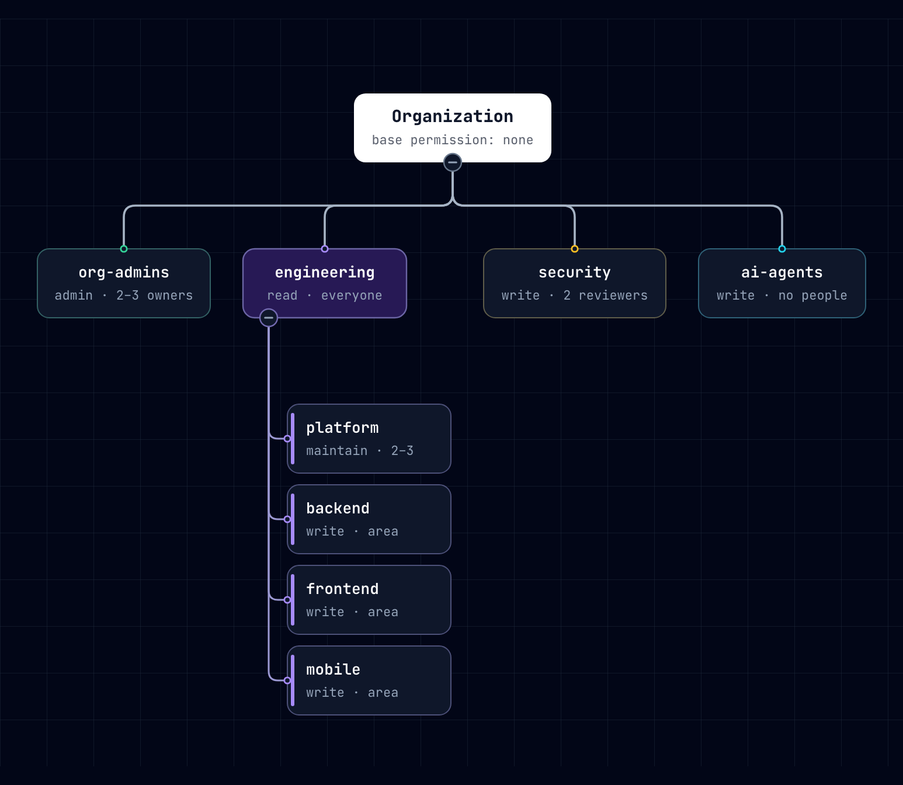
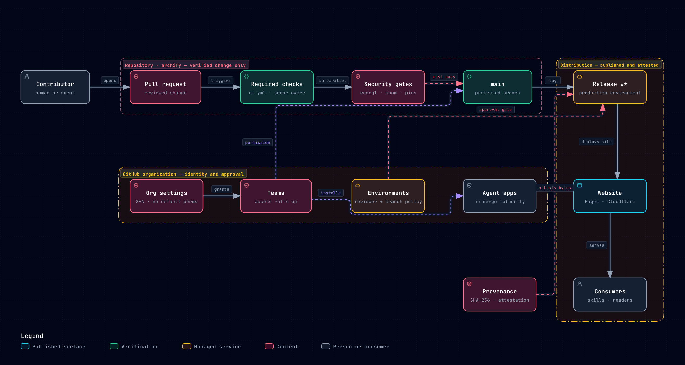
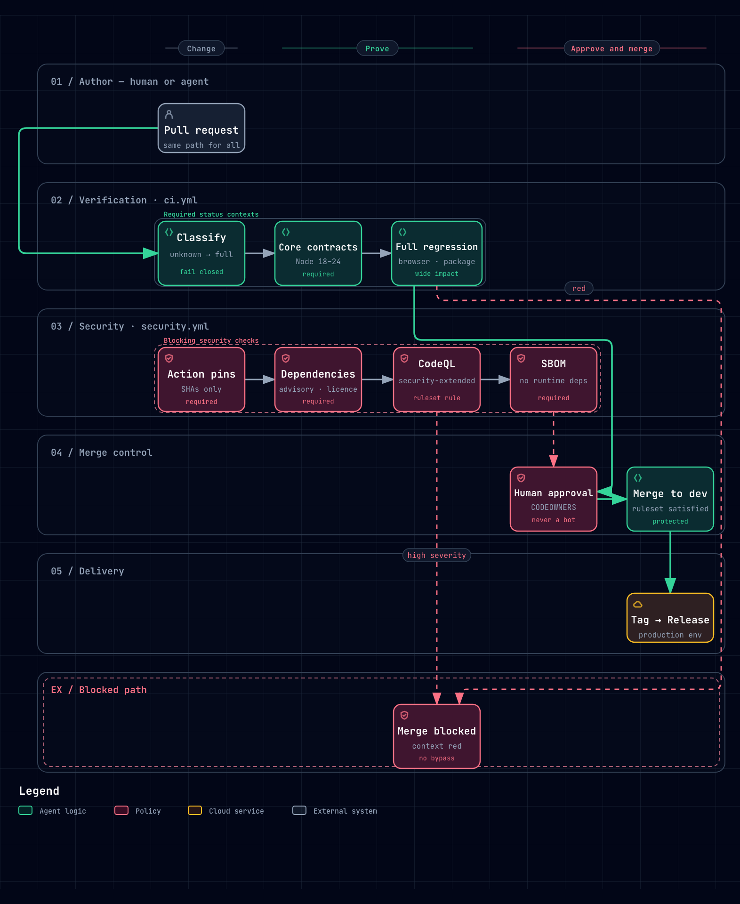
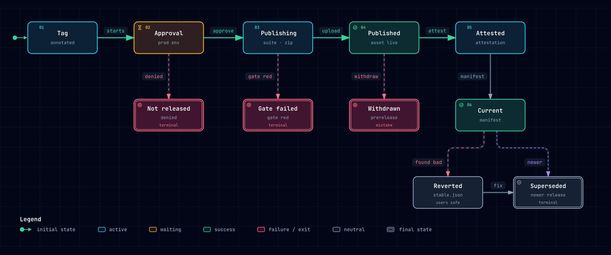
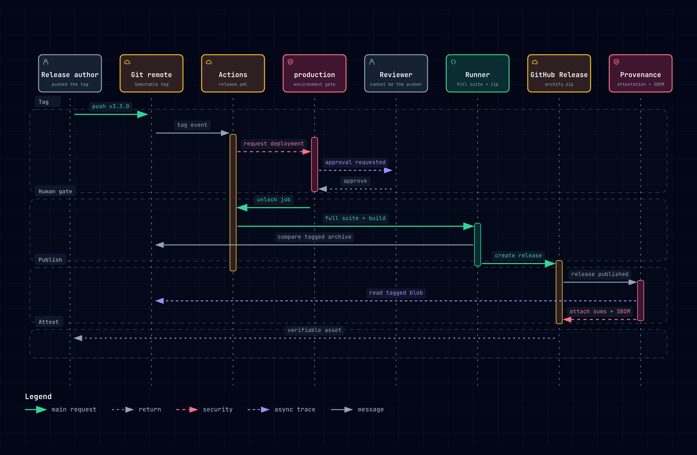
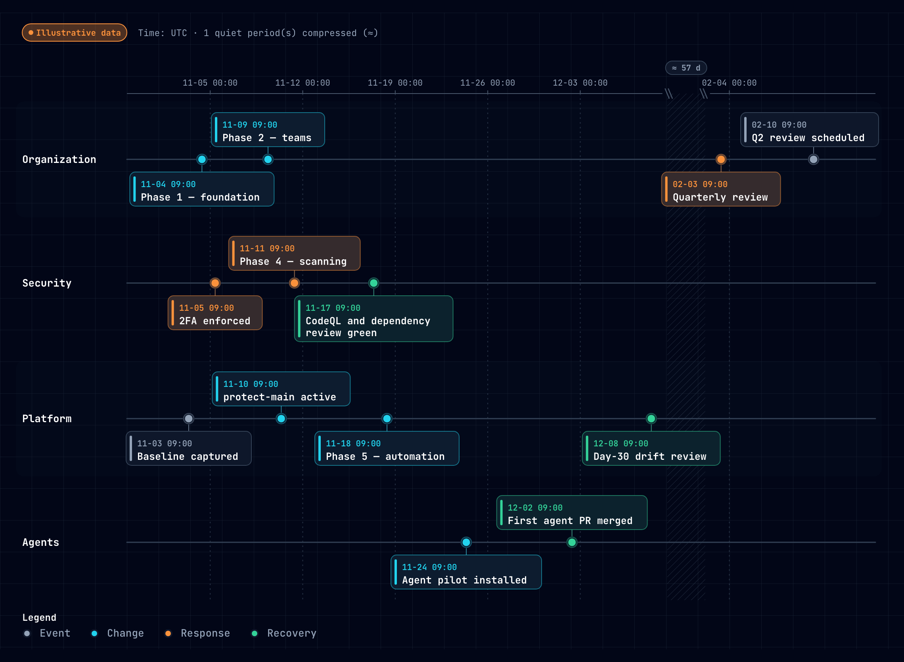

Diagrams
Six diagrams, each generated from a JSON source in enterprise/diagrams/ and validated by the Archify CLI before it is published. The images below are exported from the same SVG the interactive artifact renders, so a change to the source changes both.
node enterprise/diagrams/build.mjs # validate → render → exportTeam hierarchy and repository roles
Team hierarchy
tree
Open interactive ↗

engineering sits at read.Enterprise control plane
Archify enterprise control plane
architecture
Open interactive ↗

Merge gate
Merge gate — pull request to release
workflow
Open interactive ↗

Release lifecycle
Release lifecycle
lifecycle
Open interactive ↗

Release approval sequence
Release approval sequence
sequence
Open interactive ↗

Thirty-day rollout
Thirty-day rollout
timeline
Open interactive ↗
